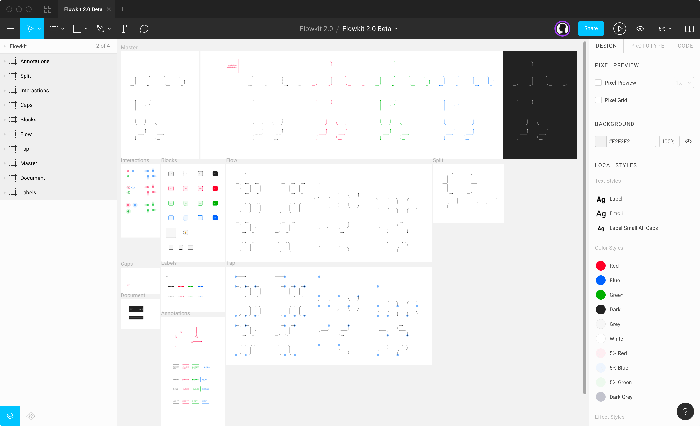

Usage
Flowkit 3.0 works with Figma, Sketch, and Adobe XD. To find what your looking for more quickly choose your favorite software below, or keep scrolling.
Jump to
Regardless of you design tool of choice, each version follows the same naming conventions and contains the same components.
Each version is designed on a 180px grid with 90px subsections to allow for quick and easy snapping between the assets. The padding is built in so it looks good, right out of the box, all snapped together.
Flowkit for Figma
Flowkit for Figma has two options for usage and both options operate independently from the other. You only need one of them to use Flowkit, though you can certainly use both.
The plugin is the recommend way to use Flowkit for Figma. Both options have the same components, but there are some differences.
As of the time of this writing, Figma does not allow plugins to access libraries. To bypass this issue, the Flowkit plugin dynamically generates each asset as a frame with all of the proper resizing rules in place, but is not an actual instance of the Flowkit library from the Flowkit 3.0.fig file.
Installing the plugin
You can install the plugin right here by clicking the Install button in the top right of the Figma plugin page.

Activating the plugin
Once installed, choose Plugins / Flowkit from the top menu bar in Figma. This will launch the plugin for the first time. Enter your license code (found in your order email) and press return to activate.

Using the plugin
Once activated, you have access to all of the Flowkit assets. Selecting any asset from the plugin window will place that asset onto you canvas.

If nothing on the canvas is selected, Flowkit assets will place in the center of your view area. If you have an object on the canvas selected, Flowkit assets will be place directly to the right of your selected object, even if it's not in view.
- Choose any asset in the plugin window to place onto the canvas
DefaultDashedTapSwipeandLong pressare all directional flows.- The
→dropdown contains a directional modifier for the flows:→ ↓ ↑ ← Blocksare used to represent sections, features, pages, etc. They are abstract enough to use them however you'd like.Annotatecontains text blocks for annotating up, down, left, right and also containslabelsfor labelling any flow lines.- The color selector comes with 8 preset colors and the ability to use your own
hex code. This will change the color of every asset in the plugin. Note: Figma doesn't currently allow plugins to access to the default color picker.
By default the plugin will remain visible, but you can change this if you'd like by accessing the settings in the lower right and deselecting Keep Visible.

The component library
Figma requires users to have a paid Team account to create and access Figma Libraries. Therefore, to use Flowkit as a shared library between users and files, you and your team will need to have a paid Figma Team account. You don't need a Team account to open Flowkit 3.0.fig only to publish and share as a library.
Note: This is the nice thing about the plugin vs. the component library—you can use the plugin on any team or any document with the free Figma plan.
Loading the library
- Open
Flowkit 3.0.figwith Figma. - Click the book icon in the top right of the assets panel to access
Libraries. - Navigate to the
Flowkit 3.0line item and clickPublish. - Create a Team project called Flowkit and click
Move. - Flowkit will now be available as a library across all Team projects.
- For more info on Figma libraries, read Figma's documentation.
- Please make sure you have the appropriate Flowkit Team license to share the library with your design team.
- If you have a free Figma account, it is recommended that you create userflows as additional pages inside of the Flowkit file in order to leverage the assets as components.
You will now have access to all of the Flowkit components in the left panel.
Using the libary
In any new document that you'd like to use Flowkit, go to the assets tab in the layers panel, click the book icon, scroll to Flowkit 3.0 and activate. You can now place those libary components via the assets panel.
Pressing Option 2 is the quickest way to access Figma library assets.
Modifying the color or style
To change the color or style of a flow component instance, you can select the compent and change the color in the right properties panel.
To change the default color or style of every single directional component, edit the components in the Master frame. You may want to duplicate the file before doing so, in case you want to revert back.

Flowkit for Sketch
Flowkit for Sketch is built from nested components with all of the resize rules built in. Each path and end point can be overriden from the properties panel for fully customization. You can even modify your own library to better suit your personal style.
Loading the Library
Installing the Flowkit Library will make it available for use with all of your Sketch documents.
- Open Sketch preferences, navigate to the
Librariestab. - Choose
Add Library...in the bottom left. - Select
Flowkit 3.0.sketchand clickOpen - Now you're ready to use Flowkit 3.0 in any Sketch 60+ document.
Note: Flowkit uses the open source font Inter for it's text annotations and labels. You will need to install the font or replace the font with your own preference in the main Flowkit 3.0.sketch file to ensure proper function.
Using the libary
Using Flowkit with Sketch Runner is highly recommended. You can download the free Sketch Runner plugin, here. Sketch Runner will allow you to use keyboard commands to insert Flowkit library symbols onto your canvas.
Use ⌘ " to open Sketch Runner, then type in the easy-to-remember™ Flowkit naming convention Type / Direction 1 / Modifier 1 / Direction 2 / Modifier 2 to place the symbol you want.
Download this free quick key shortcut plugin to use Flowkit even faster.
If you're not using Sketch Runner to insert symbols you have two options:
- You can insert symbols the old fashioned way by going to
Insert / Flowkit 3.0 / *your symbol of choice* - You can go the the components section (beside layers) in the left panel and drag and drop any symbol onto your canvas or artboard. Note: The components panel is a new feature of Sketch v60.
Flowkit for XD
Save Flowkit 3.0.xd as a Cloud Document and use the Flowkit components as linked assets to share and reuse design across multiple documents. For more information on XD cloud documents, go here.
Using the library
CMD Shift Y will give you quick access to your library components. Click and drag any Flowkit component onto your canvas. Select any nested component and Option Drag from the library to override it.
Still have questions?
I'll post more examples soon, but in the meantime, I'm happy to answer any other questions you might have. Tweet me or shoot an email to matt@mds.is